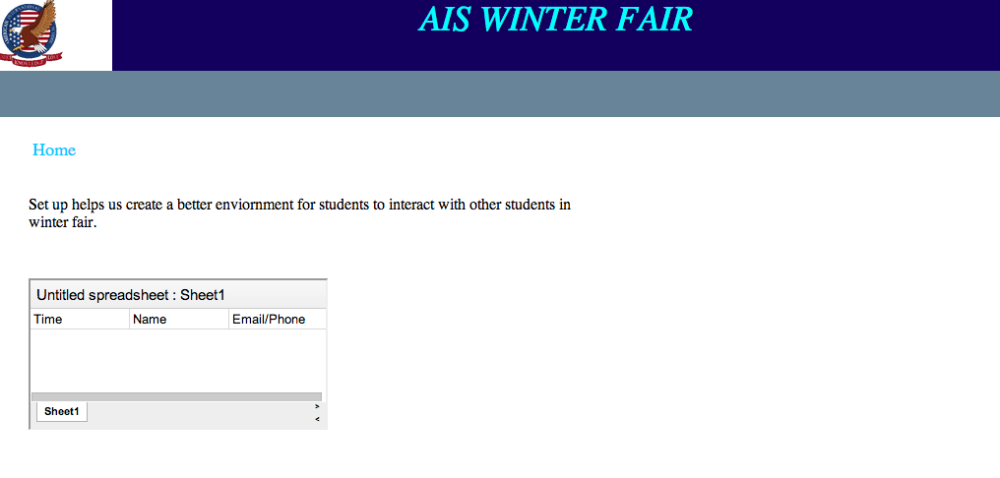
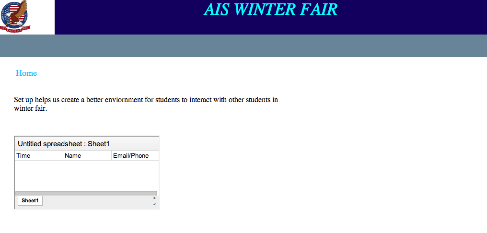

Subpages
Brainstorm
Wireframe
Templates
Homepage
Comparing Fireworks to Dreamweaver (buttons)
Reflection and Evaluation
- Sub-Page Template
- Sub-Page Prize corner
- Sub-Page Donations (including food, money, hamper donations)
- Sub-Page Set up (only include times)
Sitemap
- 1. Homepage
- Sub-Page Prize corner
- Sub-Page Donations (including food, money, hamper donations)
- Sub-Page Set up (only include times)
Subpages
Donation Subpage
 Setup Subpage

Prize Corner Subpage
Setup Subpage

Prize Corner Subpage
WireFrame 1

WireFrame 2

WireFrame 3

WireFrame 4
WireFrame 5

Why we made this
We picked wireframes from our previous ideas because the pages and the other pages and homepage should look almost the same so we based our wiresframes off the other homepages.
Our old homepage did not match with our subpages so we picked a wireframe that would give a simliar feel to everypage.
Feedback
We discussed the pros and cons of the contact bar. It will allow people
to see the numberes and emails faster. However,the contact bar
on the bottom is not really used because parents, our audience, ususally
do not know that the thing on the bottom is the contact bar.


Picking our template
We decided that the bar on the bottom was not really needed and the second one is more organized, so we used the second one as our template
Look and Feel
The message of our website giving out overall is that we want
the audience, parents, to look at it and feel that it is simple and easy to use with simple one click sign ups.
The theme of our background is blue because it gives a relaxing effect. Our words are in small boxes which prevents the readers to read on a long line of text, then having to find the next line

Feedback from myself
- newsbar is not really needed.
- There is a logo word on the side of the picture, need to be deleted
- Need to get and properly link AIS logo from group mates.
Feedback by others
- Excellent planning: very organised
- Color contrast is VERY bad
- Functional, but the website could be more organised
New Homepage
.png)
We have amended our flowchart by a bit.
The Flowchart The preparation is gone because while we were working on our project,
we noticed that the perparation was exactly the same thing as set up.
MAP
M - Main Message : Help the AIS PTA and interact with their childrens
A - Audience : Elementary Parents who have time to spare
P - Purpose : To have a website that allows Elementary Parents to easily sign up.
Objectives
- For Elementary Parents who have time to spare, and would like to make a commitment to AIS to sign up for winterfair volunteer (Yes)
- For Elementary Parents who have time to spare, and would like to make a commitment to AIS to easily sign up (Yes)
- For Elementary Parents who have time to spare, and would like to make a commitment to AIS to know that this is from AIS by adding AIS logo (Yes)
- For Elementary Parents who have time to spare, and would like to make a commitment to AIS to contact PTA if help is needed (Yes)
- For Elementary Parents who have time to spare, and would like to make a commitment to AIS to know that PTA needs their help (Yes)
Yes we have completed all these objectives.
Success Criteria
- For client to be able to effectively have their audience to volunteer
?/10 We can not confirm this yet...
- Sign up form is on site
Yes
- Contact list is on site
Yes
-
Upcoming news are on site
Deleted due to hinderance to the user experience.
During the process of learning and working with out client, we noticed that the upcoming news part
of the page is futile. It does not help parents because parents who actually want to come and help out
will do it today and not on a future day. Thus the news does not concern the parents.
- Has pictures
9/10 Easy to understand, does not distract parents from signing up.
- Easy to use
?/10 Can not confirm this yet...
- Has breif description of every event that summarizes the events
Yes
- Similar feel and look thorughout the subpages
10/10 the pages are made from the same template, people know that it is the from the same page
-
-
-
-
-
-
Dreamweaver
-Pros
- Easy to make
- Effects can be changed around whenever wanted by changing the a:hover/a:visited in css
- Can see what link and page it is going to when dragged
- Internal linking making it easy for users to link to what they want
-Cons
- Does not look like a button, people might not know if it is clickable.
- It does not have any 3d effects.
- Looks like plain text
Fireworks
- Pros
- Easy to make
- Can make 3d buttons and effects onto the buttons easily
- Easy to bring into Dreamweaver
-Cons
- Requires javascript in order it to work
- There is no internal linking